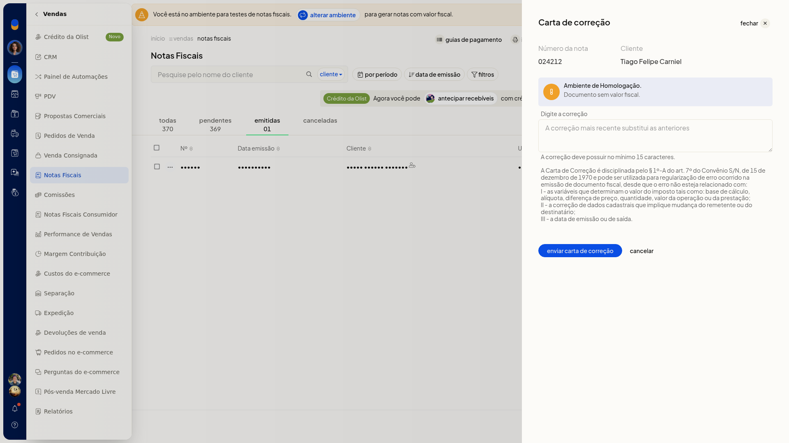
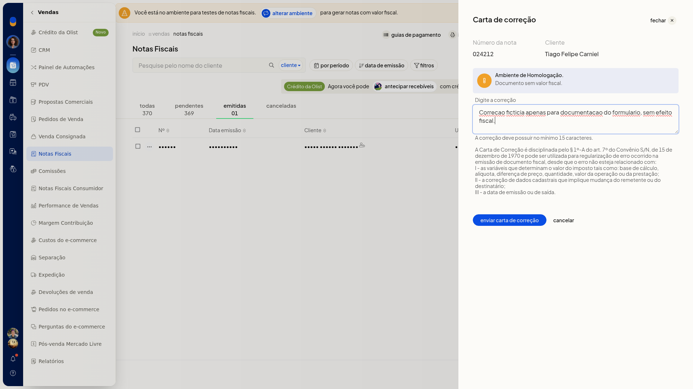

Carta de correção (CC-e)
Importante
- Carta de correção aparece no menu da nota emitida. Na nota pendente, a opção não aparece.
- O texto da correção precisa ter no mínimo 15 caracteres.
- A correção mais recente substitui a anterior.
Instruções
-
Acesse Vendas > Notas Fiscais.
-
Na linha da nota emitida, abra o menu de ações e escolha Carta de correção.

-
Informe o texto da correção, com no mínimo 15 caracteres.

-
Clique em Cancelar para sair sem enviar a carta. O evento não é registrado.
